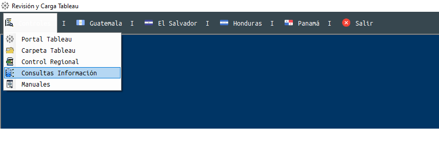
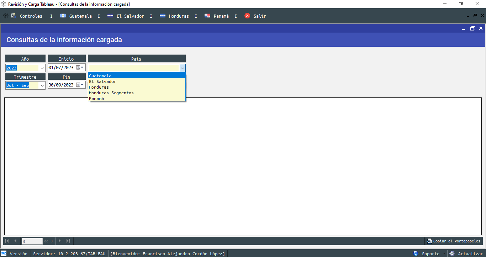
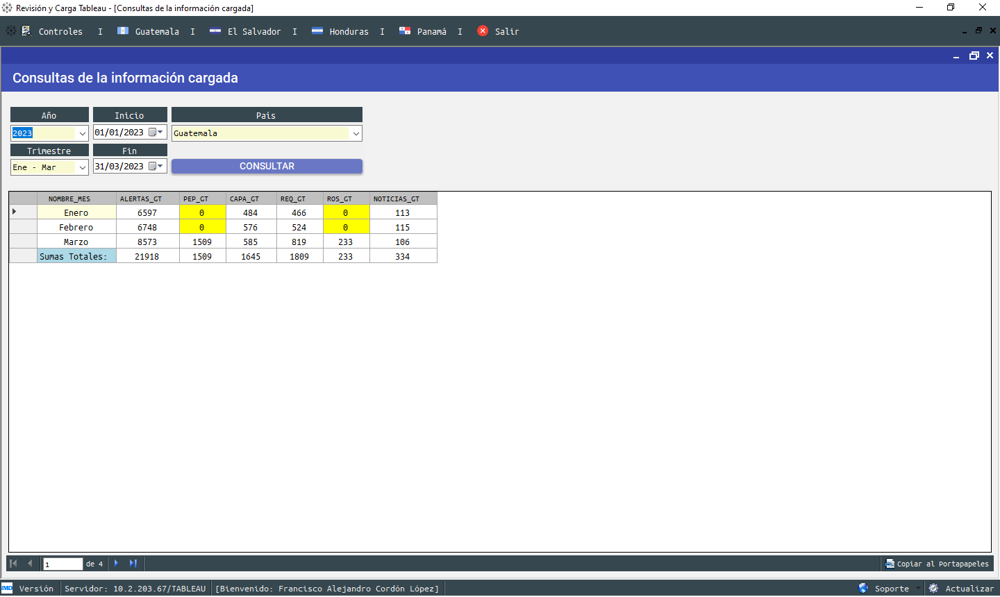
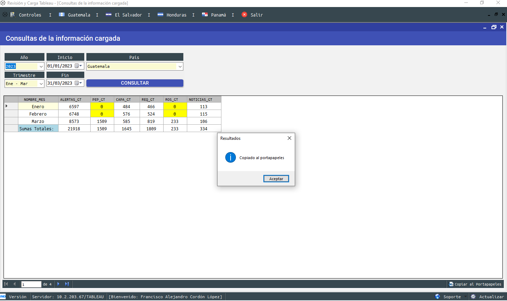
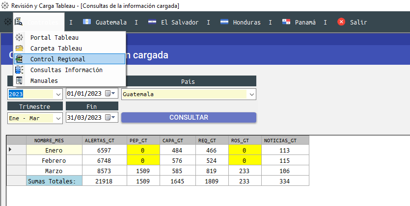
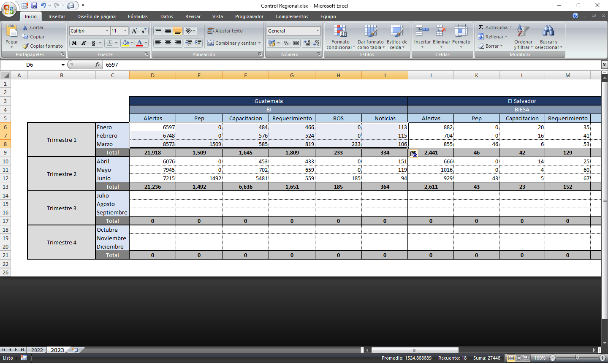

Ingresar al Módulo controles y a la opción consultas información

Seleccionar:
–Año
–Trimestre
–País a consultar

Ejecutar la consulta para generar el resumen de la información cargada en las tablas generales de tableau.

Copiar resultados de la consulta al portapapeles y pegarlo en el Control Regional.xlsx acceder desde el Módulo controles



© Francisco Cordón - 2023